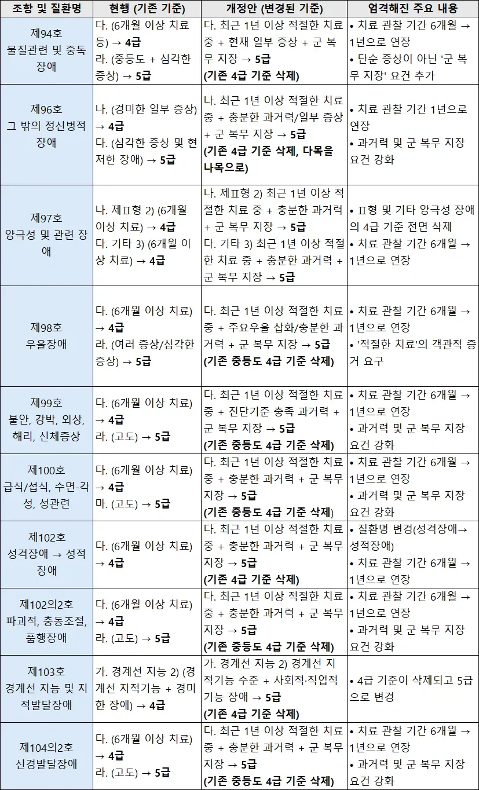

정신 아픈 친구 억지로 현역 끌고 와봤자 그냥 모두가 괴로운 상황일 뿐인데.....
이제 원래는 정신병 공익 가야할 친구들이 현역으로 온다고...?

정신 아픈 친구 억지로 현역 끌고 와봤자 그냥 모두가 괴로운 상황일 뿐인데.....
이제 원래는 정신병 공익 가야할 친구들이 현역으로 온다고...?
법 제정은 너 말대로의 효과를 노리고 한게 맞는거같음
병무청 새끼들이 좆대로만 안하면 법자체는 "애매하게 안묶고 확실하게 빼줄게" 방향이 맞는듯
근데 어차피 입법예고 단계니까 별 기대는 안된다 병무청새끼들 하는짓도 보면 뭐 ㅋㅋ
알빠노정신 ㅋㅋㅋ
국군이라는 명칭대신에 국민돌격대로 바꾸는것도 나쁘지않을듯
건강한 여자들은 왜 징병안함ㅋㅋㅋㅋ 병신나라
공익도 힘들것같은 사람이 현역으로 오는걸봐서...
여성징병 = 사회적 합의가 안되서 안됌
남성은 중졸 탈북자 장애인 예외없이 다 끌고가기 = 이건 아무튼 사회적 합의가 됬으니 해도됌
'충분한' '지장' 같은 부분에서 해석이 달라질수 있다 뭐 이런 관점인거네
최후의 한명까지
병신국
금수저들 병만들어서 공익 빼는거나 어케 해봐라 내가 본게 한두건이 아님
아쉬운거지 머
ㄹㅇ 정병있는애들 데려가는건 사회적 합의가 된거냐?
그니까 왜 미필을 병무청장으로 ...
저건 사회적 합의가 있는거임?
병무청 새끼들 하는짓거리 보면 그럴 가능성이 높긴한데... 개정안만 놓고 보면 "너 충분한 기간동안 치료받았으면 확실히 빼줄게" 로 읽혀서 그럼..
애매한 사람은 현역으로, 확실한 사람은 아예 빼는 방향이라 전체적으론 강화긴 한데 확실한사람들은 더 풀어주는걸로 읽힘
애초에 정공 받은 애들 4급에서 3년동안 대기만 타는거때문에 문제도 몇번 제기됐고 하니까